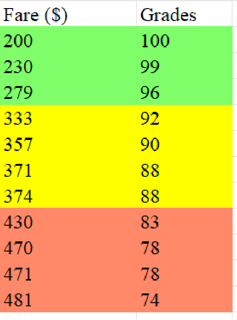
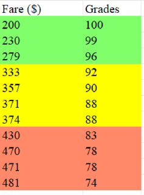

The remaining 13 Candidates:
- Air China: CA 919/923/929
- All Nippon Airways: NH 920/968
- China Eastern: MU 523/537
- China Southern: CZ 8309
- Jetstar Japan: JQ 36
- Juneyao Airlines: HO 1385
- Peach Aviation: MM 898
- Shanghai Airlines: FM 815
- Spring Airlines: 9C 6217
General Info
In this round, we do more calculations to figure out which specific flight is the best among all candidates. Instead of comparing two or three flights to weed out a candidate that is totally unqualified, we weight a few factors and establish our own grading citeria. That is, we grade each flight. Flight receiving the highest score would be the final winner of our tournament, though whether this final winner would necessarily be the best flight among all candidates still needs to be justified (This will be further analyzed in the last section of our final round).
A list of factors would be put into consideration. They are:
- Fare: 30%
- Seat Pitch: 13%
- Departure Time: 10%
- Airline rating (combined with number of ratings): 8%
- Seat width: 5%
- Delay Rate: 34%
- Around 15 mins: 2%
- Around 30 mins: 12%
- 45 mins or more: 20%
Grading Criterias
For each factor, we establish a grading criteria. Most of them are not linear for we want to make adjustments if needed. For example, flights with a comparatively high delay rate (say, more than 20%) around 15 mins receive a comparatively higher grade, whereas flights with a comparatively low delay rate (say, around 10%) around 45 mins or more receive very low grades. The followings present all seven criterias we have.
Seats


Departure Time and Fares
 

Airline Ratings

Delay Rates


Round 3 result